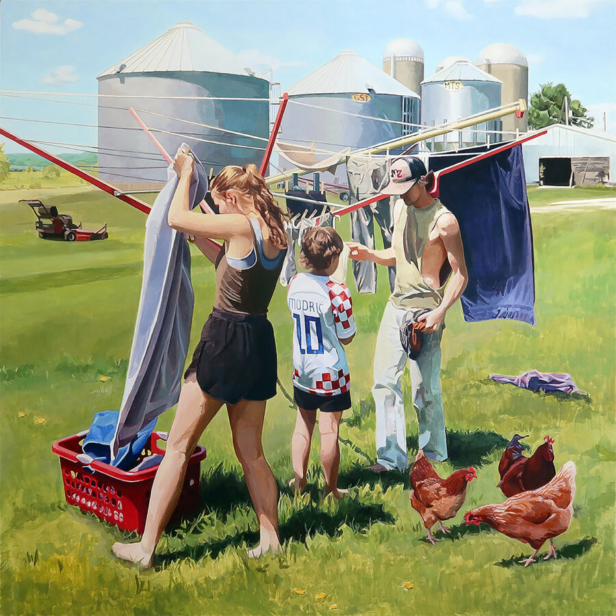

Maria Sisul: The Posture of a Place
McHenry County College is excited to present Maria Sisul’s solo exhibition, “The Posture of a Place.”
January 20 – February 13, 2026
McHenry County College | Epping Gallery
8900 U.S. Highway 14, Crystal Lake, IL 60012 ──────────────────────
ARTIST STATEMENT
I paint naturally occurring scenes from my life to bring clarity and vividness to the moments we quickly pass, depicting the inspiration within our dedication, attention, small desires, and acts of service. Intentionally cropped and balanced compositions, along with precise forms and lighting, reflect the subject’s internal landscape. The environment acts as a witness and voice for figures that face away from the viewer.
A new hope, weary dedication, the ruffling discomfort of goodbye, willing commitments, simple pleasure—feelings present in the moment a reference was taken—are distilled into distance, placement, and gesture. In domestic, private, or public spaces, the relationship between figure and setting may shift: how much are we absorbed by a place that is not our own, and how much of our identity is revealed through the context of our surroundings versus pure self-expression?
My work explores this personal need to understand the value of our physical environments: why open horizons have comforted me, and how body language can speak more accurately than words. The Posture of a Place follows this dance between figure and environment. I invite viewers to observe the places that hold their spirit and the power of being entangled with the moment around them. ──────────────────────